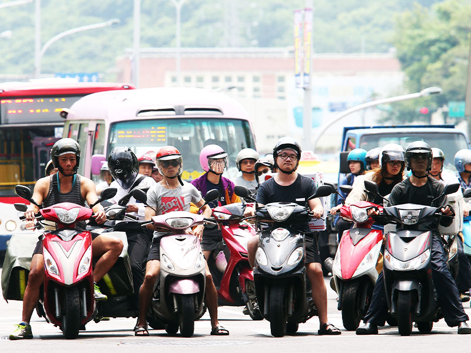
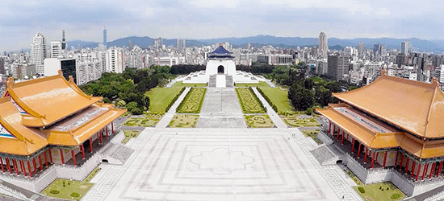
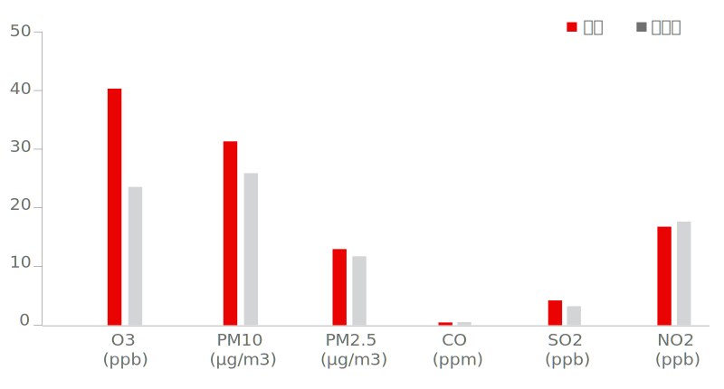

過去8年間，台北市每年平均有近兩個月的溫度超過35度。
高溫讓人「厭世」。
台北夏季體感溫度若達31.5度，溫度每上升1度，死亡率便提高5.1%。
體感溫度若達30.7度，溫度每上升1度，心血管疾病死亡率便增加3.5%。
體感溫度若達31.4度，溫度每上升1度，呼吸系統疾病死亡率便增加12.5%。
當寶島變熱島 高溫會殺人
熱、好熱、非常熱！還不到5月，台北市已飆出攝氏35.9度高溫，高掛的太陽把路上民眾曬昏了頭，腳下的柏油路也冒著熱氣，許多民眾邊擦汗邊問：「怎麼會這麼熱？」
除了受全球暖化影響，都市熱島效應（Urban Heat Island Effect）也是增溫的關鍵推手。汽車排廢、易吸熱的柏油路、不通風的密集街區等因素，以及無法散熱的盆地地形，導致成功大學建築學系特聘教授林子平研究團隊的調查發現，在台北車站與西門商圈周邊等台北市最熱的地區，夏季平均溫度與木柵、關渡等台北郊區的差距最多達4度。
隨著高溫熱氣被困在都市建物中無法散去，不僅讓民眾感到厭世、高溫自殺率屢屢攀高外，空汙的程度也跟高溫有關。對岸的香港政府更研究發現，2003年爆發嚴重的SARS疫情，疫情擴散也與都市建築物密集，導致空氣不流通有關。要如何減緩熱島效應，讓台灣島不「發燒」，已經刻不容緩。
發燒的都市
氣象專家彭啟明指出，台北市會這麼熱，除了熱島效應外，盆地效應、太平洋高壓籠罩、溫室效應等因素也有影響。他預測，未來20年內，台北市中午會經常有高達40度的高溫。

資料來源／中央氣象局
熱島效應特色一：集中在都會區
什麼是都市熱島效應？林子平教授說，都會區人口聚集、開發密度上升，導致水泥建築、柏油路面增加，這些材質都會蓄積熱能，交通工具、空調系統也會排放廢熱，加上綠地減少、通風變差，都會區像是個悶燒鍋，市中心比周邊溫度還要高，在全球氣候變遷與溫室效應的影響下，更加劇都市高溫化。
國家災害防救科技中心氣候變遷組指出，台灣都會區極端高溫的次數越來越頻繁，以去年5月為例，台北測站超過37度的高溫日數有4天、超過35度的有13天，都打破台北站5月的高溫日數紀錄；去年8月5-20日連續10天高溫超過36度，更改寫了2012年7月8-16日連續9天的120年紀錄。
中央氣象局測政組組長李育棋表示，可以從台北、淡水氣象站的氣溫差距，看出都市開發對氣象站所測溫度的影響。
台灣汽機車密度極高，而車輛排熱是也導致都市溫度增高的因素之一。圖／杜建重
台北、淡水氣象站的氣溫早期十分接近。
但自1985年起，兩站氣溫差距增至0.6度，到了2018年已經接近1度。
推究其因，1985年前後是台北氣象站周邊地表環境改變最大的時刻。
1980年，中正紀念堂落成
1986年，國家圖書館啟用
1987年，兩廳院啟用
這些新落成的大面積水泥鋪面與建築物，均是造成台北氣象站周圍溫度上升的因素。
熱島效應特色二：夜間增溫比白天明顯
都市熱島效應夜間比白天影響更大，水泥建築在白天吸收的熱能，入夜後釋放出來，照理說太陽下山後，氣溫會逐漸下降，但這些人工熱能持續悶燒，讓都市夜間增溫。
如果夜間最低氣溫高於25度，就像熱帶地區的夜間溫度，稱為「夜間熱帶」（The Trapical Night）。夜間高溫日數越多，代表熱島效應影響越顯著。
根據中央氣象局資料，1991-2000年每年平均夜間高溫日數為81日，2001-2010年為97.5日，但2011-2018年提高到109.9天。
中央研究院環境變遷研究中心研究員林傳堯，分析台北市7、8月每小時均溫的長期趨勢，也證實台北市夜晚越來越熱；以每日最低溫出現的清晨5點來看，1971-1980年每日平均溫度為25.6度，但2001-2010年則提高到27.3度。
長期觀測氣象資訊的中央氣象局氣象科技中心科長陳孟詩就說，天氣越來越熱，當晚間溫度超過28度，就需要開冷氣，否則根本沒辦法好好睡，但開冷氣睡覺的天數不斷增加，電力使用增加，加上空調熱氣都讓戶外溫度再上升，就更得依靠冷氣，簡直是惡性循環。
台北7、8月每小時均溫走勢圖
資料來源／Climate variability of heat wave and projection of warming scenario in Taiwan 作者／林傳堯、龍世俊、郭勉之、蘇炯瑞、錢伊筠
這是台北在7、8月間不同時刻的溫度走勢圖。
在1971年至1980年及2001年至2010年間，台北在夜間及清晨的溫度上升近2度。
同一時期，台北在中午的溫度則僅上升近1度。
顯示受熱島效應影影響，都市在夜間的溫度增幅較明顯。
變成熱島後...
- 3.76%：每增溫1°C，農業生產力減損3.76% （資料來源：中央研究院）
- 5.49%：熱島效應強度增加1℃，可能會使得老年人口之自殺死亡率相對上升5.49% （資料來源：國家衛生研究院、中央研究院等研究機構合作的研究）
- 6%：外氣溫度每上升一度，全國夏季尖峰耗電量增加6% （資料來源：台灣電力公司）
- 11%：只要溫度超過33.5度，65歲以上老人掛急診的比率提高11% （資料來源：中研院環變中心龍世俊研究員）
高溫讓人厭世
對於心血管、呼吸道等慢性病患，不只寒流來要小心，天氣太熱也會提高致死率。多數人認為好天氣會有好心情，但研究顯示，天氣太熱時自殺率會上升，精神疾病發作率也會增加。
台大醫學院環境職業醫學科教授郭育良說，高溫除帶來中暑、熱衰竭等熱傷害，還會影響身心健康，尤其受到都市熱島效應的影響，都會區的脆弱族群如65歲以上老人、14歲以下兒少、慢性病患者或社經地位較低的民眾等，都要及早調適。
事實上，熱不只帶來中暑、熱衰竭等健康衝擊，對健康的衝擊比想像的更全面。郭育良分析1994-2003年全台灣死因資料庫，發現最低死亡率的宜居溫度為26-27度，當氣溫超過31度，每增加1度整體死亡率提高5%。郭育良說，在心血管、呼吸系統疾病的死亡率上，當夏季的每日平均體感溫度達到30.7度、31.4度，每上升1度死亡率就增加3.5%、12.5%；簡言之，當日均氣溫超過31度時，高溫對健康的衝擊就很明顯，值得各單位重視。
郭育良與中、日、南韓學者的跨國研究中，分析各國的自殺人數與氣溫變化，發現高溫會影響人的精神狀態。以台灣為例，當氣溫上升2.3度，自殺風險提高7.8%；在南韓氣溫增加4.7度，自殺率提高6.8%；而在日本氣溫增加4.2度，自殺率提高4.5%。他解釋，不管在台灣、日本或南韓，分析結果都顯示氣溫增加到一定程度，自殺率就會提高。
郭育良說，憂鬱症與高溫也有關聯，他與國家衛生研究院合作探討台灣氣相因子與憂鬱症發生的關係，發現在台灣憂鬱症的最低發生風險之死亡風險溫度為20-23度，年均溫在23度以上的地區，每增加1度，憂鬱症罹患率提高7%。他強調，高溫與自殺率、憂鬱症相關的發現，顛覆了一般認為天氣陰冷容易心情低落的觀念，但自殺或精神疾病的成因很複雜，仍有待研究。

空氣愈來愈髒
近來備受關注的空汙議題，因為都市熱島效應可能更趨嚴重。中研院研究發現，當氣溫升高時，都會區空汙濃度隨之上升，台北市PM2.5日平均濃度增加4成，台中、高雄則增加約一倍，儘管都未超過環保署的空品標準，仍值得關注。學者也發現，都會區在入夜後，空氣品質因為都市熱島效應而惡化。
中研院研究員林傳堯，分析2014年7月與2015年7、8月期間，台北、台中與高雄三都的空氣品質與氣溫變化，研究發現，當夏季高溫發生時，在太平洋高壓影響下，風速微弱，污染物擴散不良、容易累積，以致於高溫期間都會區內部分空氣汙染物的濃度也容易增加。
這項研究把過去40年每日最高溫的前5%溫度定義為高溫日標準，台北為攝氏35.2度、台中34度、高雄33.3度；換句話說，當每日最高溫超過標準值，就屬於高溫日，低於標準值2度定義為非高溫日。
以環保署測站資料研究分析發現，當高溫日發生時，空氣中臭氧、PM10、PM2.5的濃度均明顯高於非高溫日，但一氧化碳、NO2、SO2 沒有明顯差異；透過數值模擬，也得到類似的結果。林傳堯說，高溫會造成臭氧增加，高溫期間，細懸浮微粒中二次氣膠所占比例也大幅提高，同時也可能影響空氣中的懸浮微粒濃度。
以民眾最關注的PM2.5為例，台北市在高溫日的濃度比非高溫日高出43.8%，高雄市、台中市PM2.5濃度，在高溫日都比非高溫日多出91.7%、115%，儘管都未超過環保署的標準值（35微克／立方公尺），但仍代表高溫對空汙造成影響。
林傳堯說，都市熱島效應帶來的高溫，除了熱本身會影響健康，隨溫度升高而增加的空汙濃度，儘管目前仍未超過標準值，但隨著都市氣候越來越熱，對人體的危害值得關注。